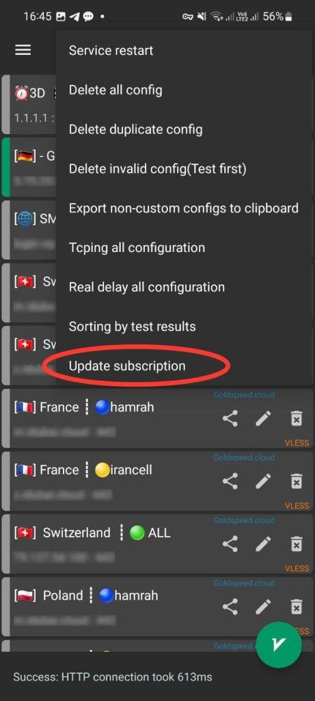

ابتدا اپلیکیشن اندروید v2rayNg را از لینک زیر دانلود و نصب کنید.
دانلود از گوگلپلیمرحله اول: پس از نصب برنامه V2rayNG وارد برنامه بشید. و طبق مراحل زیر عمل کنید و در آخر روی “+” بزنید.
مرحله سوم: این قسمت را طبق توضیحات به صوت دقیق انجام بدید. ۱- یک نام دلخواه وارد کنید. ۲- در این قسمت لینک اشتراک هوشمند که پس از خرید دریافت کرده اید را کپی پیست کنید. ۳- علامت ✔ را بزنید تا تنظیمات ذخیره شود. نکته: به جای این مراحل میتوانید از قسمت اسکن QR کد نیز استفاده کنید.
مرحله چهارم:
پس از ذخیره لینک هوشمند به صفحه اصلی برگردید ابتدا روی سه نقطه بزنید و سپس گزینه آخر Update subscription را بزنید تا سرورها دریافت و به روز شوند.(در صورت فارسی بودن زبان گوشی این گزینه بروزرسانی اشتراک میباشد.)
نکته: با توجه به هوشمند بودن سرورها و بروزرسانی مداوم برای حفظ کیفیت سرور ها حداقل روزانه یک بار سرور های خود را به روز کنید.
نکته: هنگام بروزرسانی سرورها VPN را خاموش کنید
مرحله پنجم:
پس از دریافت لیست سرورها
۱- در این قسمت تعداد روز باقی مانده اشتراک، حجم مصرفی، حجم کل و شماره اشتراک شما نمایش داده میشود. (نکته: این قسمت آفلاین بوده و با هر بار آپدیت مشخصات به روز میشود.)
۲- از لیست سرور ها لوکیشن مد نظر خود را انتخاب کنید.
۳- روی آیکون سبز در پایین بزنید تا اتصال برقرار شود.
مرحله ششم:
✔ با توجه به هوشمند بودن سرور ها و بروزرسانی مداوم برای حفظ کیفیت سرور ها حداقل روزانه یک بار سرور های خود را به روز کنید.(تکرار مرحله ۳)
نکته: هنگام بروزرسانی سرور ها VPN را خاموش کنید.
ابتدا اپلیکیشن Streisand را از اپاستور با لینک زیر دانلود و نصب کنید.
دانلود از اپاستورآموزش اتصال هوشمند
مرحله اول: لینک هوشمند رو در مرورگر موبایل باز کنید و طیق تصویر روی دکمه Streisand زده و سپس open را بزنید.
مرحله دوم:
پس از باز شدن برنامه به صورت خودکار سرور های شما به برنامه اضافه میشود.
۱- یکی از سرورهای لیست را به دلخواه انتخاب کنید.
۲- روی دکمه مشخص شده بزنید تا اتصال برقرار شود.
۳- در این قسمت تعداد روز باقی مانده اشتراک، حجم مصرفی، حجم کل و شماره اشتراک شما نمایش داده میشود. (نکته: این قسمت آفلاین بوده و با هر بار آپدیت مشخصات به روز میشود.)

مرحله سوم:
با توجه این این که سرور ها هوشمند بوده و به صورت روزانه برای افزایش کیفیت و سرعت در حال بروزرسانی هستند طبق این آموزش میتوانید سرورها را به روز کنید.
۱- subsciption بالای سرورها را چند ثانیه نگهدارید تا منو باز شود.
۲- سپس بر روی آپدیت بزنید تا سرورها و مشخصات اکانت به روز شود. ( vpn خاموش باشد )
مرحله چهارم:
این برنامه از بروزرسانی خودکار پشتیبانی میکنید و بهتر است گزینه اون را فعال کنید.
در تنظیمات برنامه وارد قسمت subsciption شوید.

مرحله پنجم: سپس کافی است گزینه مشخض شده را فعال کنید تا با هربار باز کردن برنامه سرور ها به صورت خودکار بروز میشوند.

آموزش اتصال دستی
مرحله اول:
پس از نصب برنامه Streisand از اپل استور وارد برنامه بشید. لینک هوشمند اشتراک خود را که پس از خرید دریافت کردهاید کپی کنید.
۱- بر روی کلید + بزنید.
۲- سپس روی دکمه Import form Clipboard بزنید تا لینک اشتراک شما وارد برنامه شود. (در صورت سوال کلید Allow past را برای تایید بزنید.)
مرحله دوم:
پس از وارد کردن لینک هوشمند سرور ها نمایش داده میشود.
۱- یکی از سرورهای لیست را به دلخواه انتخاب کنید.
۲- روی دکمه مشخص شده بزنید تا اتصال برقرار شود.
۳- در این قسمت تعداد روز باقی مانده اشتراک، حجم مصرفی، حجم کل و شماره اشتراک شما نمایش داده میشود. (نکته: این قسمت آفلاین بوده و با هر بار آپدیت مشخصات به روز میشود.)
مرحله سوم:
با توجه این این که سرور ها هوشمند بوده و به صورت روزانه برای افزایش کیفیت و سرعت در حال بروزرسانی هستند طبق این آموزش میتوانید سرورها را به روز کنید.
۱- subsciption بالای سرورها را چند ثانیه نگهدارید تا منو باز شود.
۲- سپس بر روی آپدیت بزنید تا سرورها و مشخصات اکانت به روز شود. ( vpn خاموش باشد )
مرحله چهارم:
این برنامه از بروزرسانی خودکار پشتیبانی میکنید و بهتر است گزینه اون را فعال کنید.
در تنظیمات برنامه وارد قسمت subsciption شوید.
مرحله پنجم: سپس کافی است گزینه مشخض شده را فعال کنید تا با هربار باز کردن برنامه سرور ها به صورت خودکار بروز میشوند.
ابتدا اپلیکیشن ویندوز NekoBox را از لینک زیر دانلود و نصب کنید.
دانلود با لینک مستقیممرحله اول: ابتدا برنامه را از طریق لینک بالا دانلود و در سیستم خود از حالت فشرده خارج کنید و برنامه nekoray.exe را اجرا کنید.
مرحله دوم:
لینک هوشمند V2ray که پس از خرید تحویل گرفتهاید را کپی کنید و مراحل زیر را انجام دهید.
۱- بر روی کلید Program کلیک کنید.
۲- سپس روی دکمه add profile from clipboard بزنید.
۳- روی ok کلیک کنید.
نکته: هنگام اضافه کردن سرور ها VPN خاموش باشد.
مرحله سوم:
پس از اضافه شدن لیست سرورها بر روی سرور مورد نظر کلیک سمت راست کنید و گزینه Start را بزنید.
سپس برای اتصال VPN در تمام سیستم گذینه Tun Mode را روشن کنید.
توجه: برای بروزسانی سرور ها از Ctrl+U استفاده کنید.
© تمامی حقوق این وبسایت مطعلق به لوین ویپیان میباشد.